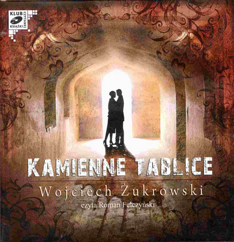
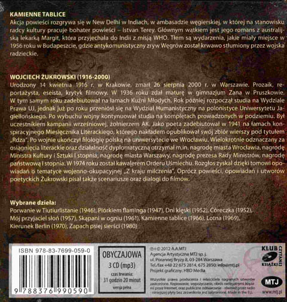

Akcja powieści rozgrywa się w New Delhi w Indiach, w ambasadzie węgierskiej, w której na stanowisku radcy kultury pracuje bohater powieści - Istvan Terey. Głównym wątkiem jest jego romans z australijską lekarką Margit, która przyjechała do Indii z misji WHO. Tłem są wydarzenia, jakie miały miejsce w 1956 roku w Budapeszcie, gdzie antykomunistyczny zryw Węgrów został krwawo stłumiony przez wojska radzieckie.
Autorem jest Wojciech Żukrowski.

